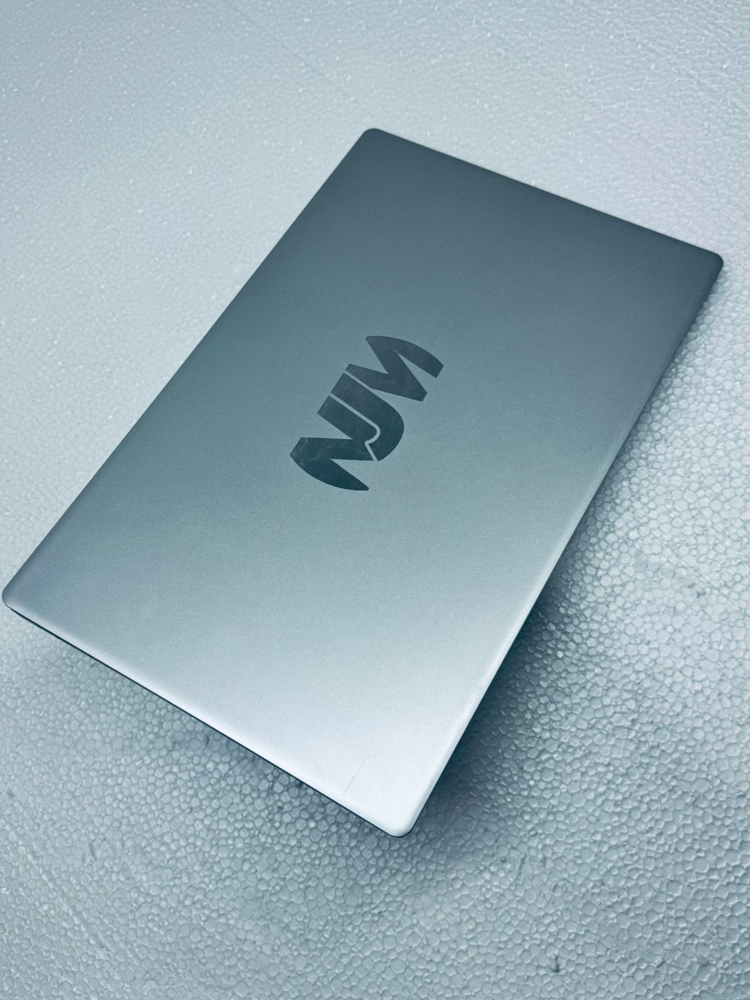

ОТЕЧЕСТВЕННЫЙ ПРОИЗВОДИТЕЛЬ КОМПЬЮТЕРНОЙ ТЕХНИКИ
Сертификаты компании
- ✔ Сертификация СТ-KZ
- ✔ Сертификат соответствия EAC


ОТЕЧЕСТВЕННЫЙ ПРОИЗВОДИТЕЛЬ КОМПЬЮТЕРНОЙ ТЕХНИКИ
Системные блоки
Бренд NJM Тип Системный блок Видеопроцессор Intel UHD Graphics 630 Цвет Черный Объём оперативной памяти, 16 ГБ Тип оперативной памяти DDR4 Модель процессора Intel Сore i5-12400 Количество ядер 6 Объём HDD накопителя, Гб 1000 Объём SSD накопителя, Гб 256 Мощность блока питания, Вт 500 Socket LGA1700 Тактовая частота процессора 2.5 ГГц Максимальная частота процессора 4.4 ГГц Тип накопителя HDD+SSD Форм-фактор корпуса Midi-Tower Частота оперативной памяти 3200 МГЦ Клавиатура мышь Гарантия производителя 12 месяцев Операционная система Windows 11 Pro.
Бренд NJM Модель процессора Intel Сore i5-13400 Количество ядер 10 Количество потоков 16 Socket LGA1700 Объем кэша L3 20 Мб Тактовая частота процессора 2.5 ГГц Максимальная частота процессора 4.6 ГГц Видеопроцессор Intel®️ UHD Graphics 730 Объём оперативной памяти, 16 ГБ Тип оперативной памяти DDR4 Объём SSD накопителя, 1 тб NVME M.2 Мощность блока питания, Вт 220 Диагональ, дюйм 23.8 Тип матрицы экрана IPS Разрешение дисплея 1920x1080 Клавиатура мышь Гарантия производителя 12 месяцев Цвет Черный.
Бренд NJM Клавиатура мышь Гарантия производителя 12 месяцев Цвет Черный.

Бренд NJM Клавиатура мышь Гарантия производителя 12 месяцев Цвет Черный.
Бренд NJM Тип для работы и учебы Модель процессора Intel Сore i5-1235U Количество ядер 10 Количество потоков 12 Socket FCBGA1744 Объем кэша L3 12 Мб Тактовая частота процессора 3.3 ГГц Максимальная частота процессора 4.4 ГГц Видеопроцессор Intel® Iris® Xe Объём оперативной памяти, 16 ГБ Тип оперативной памяти DDR4 Объём SSD накопителя, 512 гб NVME M.2 Питания, Втч 48 Диагональ экрана 15.6 Тип матрицы экрана IPS Разрешение дисплея 1920x1080 Гарантия производителя 12 месяцев Цвет Серый.